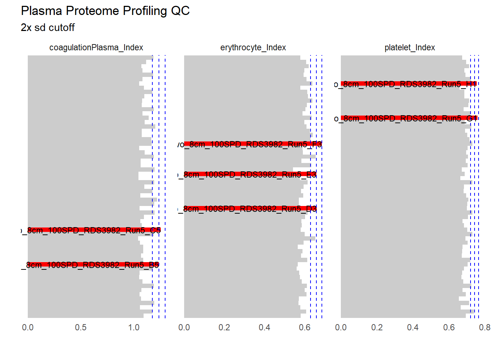

Show the code
source("source.R")
source("functions.R")
file = "raw/20250703_073723_StemCells_ANWR_Run5_Plasma_PE_Report.tsv"
dfBGS <- data.table::fread(file)Data is loaded from Spectronaut BGS Extended report. Report contains peptide and protein information.
source("source.R")
source("functions.R")
file = "raw/20250703_073723_StemCells_ANWR_Run5_Plasma_PE_Report.tsv"
dfBGS <- data.table::fread(file)data.frame("File" = file,
"Size, GB" = file.info(file)$size/1024^3,
"Date" = file.info(file)$mtime,
"FASTA" = dfBGS %>% distinct(E.LFQMethod, PG.FASTAName) %>% group_by(PG.FASTAName) %>% summarise(n = paste(PG.FASTAName, collapse = ";")) %>% pull(n),
"Species" = dfBGS %>% distinct(E.LFQMethod, PEP.AllOccurringOrganisms) %>% group_by(E.LFQMethod) %>% summarise(n = paste(PEP.AllOccurringOrganisms, collapse = ";")) %>% pull(n),
"Errors" = dfBGS %>% head(1) %>% pull(E.Errors),
"Warnings" = dfBGS %>% head(1) %>% pull(E.Warnings),
"Files" = dfBGS %>% distinct(R.FileName) %>% nrow(),
"Conditions" = dfBGS %>% distinct(R.Condition) %>% nrow()) -> rSearch summary: Search file raw/20250703_073723_StemCells_ANWR_Run5_Plasma_PE_Report.tsv, raw/20250703_073723_StemCells_ANWR_Run5_Plasma_PE_Report.tsv, raw/20250703_073723_StemCells_ANWR_Run5_Plasma_PE_Report.tsv, raw/20250703_073723_StemCells_ANWR_Run5_Plasma_PE_Report.tsv, raw/20250703_073723_StemCells_ANWR_Run5_Plasma_PE_Report.tsv, raw/20250703_073723_StemCells_ANWR_Run5_Plasma_PE_Report.tsv, raw/20250703_073723_StemCells_ANWR_Run5_Plasma_PE_Report.tsv, raw/20250703_073723_StemCells_ANWR_Run5_Plasma_PE_Report.tsv, raw/20250703_073723_StemCells_ANWR_Run5_Plasma_PE_Report.tsv, raw/20250703_073723_StemCells_ANWR_Run5_Plasma_PE_Report.tsv, raw/20250703_073723_StemCells_ANWR_Run5_Plasma_PE_Report.tsv, raw/20250703_073723_StemCells_ANWR_Run5_Plasma_PE_Report.tsv, raw/20250703_073723_StemCells_ANWR_Run5_Plasma_PE_Report.tsv, raw/20250703_073723_StemCells_ANWR_Run5_Plasma_PE_Report.tsv, raw/20250703_073723_StemCells_ANWR_Run5_Plasma_PE_Report.tsv, raw/20250703_073723_StemCells_ANWR_Run5_Plasma_PE_Report.tsv, raw/20250703_073723_StemCells_ANWR_Run5_Plasma_PE_Report.tsv, raw/20250703_073723_StemCells_ANWR_Run5_Plasma_PE_Report.tsv, raw/20250703_073723_StemCells_ANWR_Run5_Plasma_PE_Report.tsv, raw/20250703_073723_StemCells_ANWR_Run5_Plasma_PE_Report.tsv, raw/20250703_073723_StemCells_ANWR_Run5_Plasma_PE_Report.tsv, raw/20250703_073723_StemCells_ANWR_Run5_Plasma_PE_Report.tsv, raw/20250703_073723_StemCells_ANWR_Run5_Plasma_PE_Report.tsv, raw/20250703_073723_StemCells_ANWR_Run5_Plasma_PE_Report.tsv, raw/20250703_073723_StemCells_ANWR_Run5_Plasma_PE_Report.tsv, raw/20250703_073723_StemCells_ANWR_Run5_Plasma_PE_Report.tsv, raw/20250703_073723_StemCells_ANWR_Run5_Plasma_PE_Report.tsv, raw/20250703_073723_StemCells_ANWR_Run5_Plasma_PE_Report.tsv, raw/20250703_073723_StemCells_ANWR_Run5_Plasma_PE_Report.tsv, raw/20250703_073723_StemCells_ANWR_Run5_Plasma_PE_Report.tsv, raw/20250703_073723_StemCells_ANWR_Run5_Plasma_PE_Report.tsv, raw/20250703_073723_StemCells_ANWR_Run5_Plasma_PE_Report.tsv, raw/20250703_073723_StemCells_ANWR_Run5_Plasma_PE_Report.tsv, raw/20250703_073723_StemCells_ANWR_Run5_Plasma_PE_Report.tsv, raw/20250703_073723_StemCells_ANWR_Run5_Plasma_PE_Report.tsv, raw/20250703_073723_StemCells_ANWR_Run5_Plasma_PE_Report.tsv, raw/20250703_073723_StemCells_ANWR_Run5_Plasma_PE_Report.tsv, raw/20250703_073723_StemCells_ANWR_Run5_Plasma_PE_Report.tsv, raw/20250703_073723_StemCells_ANWR_Run5_Plasma_PE_Report.tsv, raw/20250703_073723_StemCells_ANWR_Run5_Plasma_PE_Report.tsv, raw/20250703_073723_StemCells_ANWR_Run5_Plasma_PE_Report.tsv, raw/20250703_073723_StemCells_ANWR_Run5_Plasma_PE_Report.tsv (1.0155299, 1.0155299, 1.0155299, 1.0155299, 1.0155299, 1.0155299, 1.0155299, 1.0155299, 1.0155299, 1.0155299, 1.0155299, 1.0155299, 1.0155299, 1.0155299, 1.0155299, 1.0155299, 1.0155299, 1.0155299, 1.0155299, 1.0155299, 1.0155299, 1.0155299, 1.0155299, 1.0155299, 1.0155299, 1.0155299, 1.0155299, 1.0155299, 1.0155299, 1.0155299, 1.0155299, 1.0155299, 1.0155299, 1.0155299, 1.0155299, 1.0155299, 1.0155299, 1.0155299, 1.0155299, 1.0155299, 1.0155299, 1.0155299GB) is last modified 2025-07-03 10:11:19.168236, 2025-07-03 10:11:19.168236, 2025-07-03 10:11:19.168236, 2025-07-03 10:11:19.168236, 2025-07-03 10:11:19.168236, 2025-07-03 10:11:19.168236, 2025-07-03 10:11:19.168236, 2025-07-03 10:11:19.168236, 2025-07-03 10:11:19.168236, 2025-07-03 10:11:19.168236, 2025-07-03 10:11:19.168236, 2025-07-03 10:11:19.168236, 2025-07-03 10:11:19.168236, 2025-07-03 10:11:19.168236, 2025-07-03 10:11:19.168236, 2025-07-03 10:11:19.168236, 2025-07-03 10:11:19.168236, 2025-07-03 10:11:19.168236, 2025-07-03 10:11:19.168236, 2025-07-03 10:11:19.168236, 2025-07-03 10:11:19.168236, 2025-07-03 10:11:19.168236, 2025-07-03 10:11:19.168236, 2025-07-03 10:11:19.168236, 2025-07-03 10:11:19.168236, 2025-07-03 10:11:19.168236, 2025-07-03 10:11:19.168236, 2025-07-03 10:11:19.168236, 2025-07-03 10:11:19.168236, 2025-07-03 10:11:19.168236, 2025-07-03 10:11:19.168236, 2025-07-03 10:11:19.168236, 2025-07-03 10:11:19.168236, 2025-07-03 10:11:19.168236, 2025-07-03 10:11:19.168236, 2025-07-03 10:11:19.168236, 2025-07-03 10:11:19.168236, 2025-07-03 10:11:19.168236, 2025-07-03 10:11:19.168236, 2025-07-03 10:11:19.168236, 2025-07-03 10:11:19.168236, 2025-07-03 10:11:19.168236.
Search contains 61, 61, 61, 61, 61, 61, 61, 61, 61, 61, 61, 61, 61, 61, 61, 61, 61, 61, 61, 61, 61, 61, 61, 61, 61, 61, 61, 61, 61, 61, 61, 61, 61, 61, 61, 61, 61, 61, 61, 61, 61, 61 files across 22, 22, 22, 22, 22, 22, 22, 22, 22, 22, 22, 22, 22, 22, 22, 22, 22, 22, 22, 22, 22, 22, 22, 22, 22, 22, 22, 22, 22, 22, 22, 22, 22, 22, 22, 22, 22, 22, 22, 22, 22, 22 conditions.
Files are searched against database Human_uniprotkb_9606_ARWN_Modified_20250527, Human_uniprotkb_9606_ARWN_Modified_20250527;Human_uniprotkb_9606_ARWN_Modified_20250527;Human_uniprotkb_9606_ARWN_Modified_20250527;Human_uniprotkb_9606_ARWN_Modified_20250527;Human_uniprotkb_9606_ARWN_Modified_20250527;Human_uniprotkb_9606_ARWN_Modified_20250527;Human_uniprotkb_9606_ARWN_Modified_20250527;Pig_Proteome_UP000008227_9823, Human_uniprotkb_9606_ARWN_Modified_20250527;Human_uniprotkb_9606_ARWN_Modified_20250527;Human_uniprotkb_9606_ARWN_Modified_20250527;Human_uniprotkb_9606_ARWN_Modified_20250527;Pig_Proteome_UP000008227_9823, Human_uniprotkb_9606_ARWN_Modified_20250527;Human_uniprotkb_9606_ARWN_Modified_20250527;Human_uniprotkb_9606_ARWN_Modified_20250527;Pig_Proteome_UP000008227_9823, Human_uniprotkb_9606_ARWN_Modified_20250527;Human_uniprotkb_9606_ARWN_Modified_20250527;Pig_Proteome_UP000008227_9823, Human_uniprotkb_9606_ARWN_Modified_20250527;Human_uniprotkb_9606_ARWN_Modified_20250527;Pig_Proteome_UP000008227_9823;Human_uniprotkb_9606_ARWN_Modified_20250527, Human_uniprotkb_9606_ARWN_Modified_20250527;Human_uniprotkb_9606_ARWN_Modified_20250527;Pig_Proteome_UP000008227_9823;Human_uniprotkb_9606_ARWN_Modified_20250527;Human_uniprotkb_9606_ARWN_Modified_20250527, Human_uniprotkb_9606_ARWN_Modified_20250527;Pig_Proteome_UP000008227_9823, Human_uniprotkb_9606_ARWN_Modified_20250527;Pig_Proteome_UP000008227_9823;Human_uniprotkb_9606_ARWN_Modified_20250527, Human_uniprotkb_9606_ARWN_Modified_20250527;Pig_Proteome_UP000008227_9823;Pig_Proteome_UP000008227_9823;Human_uniprotkb_9606_ARWN_Modified_20250527;Human_uniprotkb_9606_ARWN_Modified_20250527;Human_uniprotkb_9606_ARWN_Modified_20250527, Pig_Proteome_UP000008227_9823, Pig_Proteome_UP000008227_9823;Human_uniprotkb_9606_ARWN_Modified_20250527, Pig_Proteome_UP000008227_9823;Human_uniprotkb_9606_ARWN_Modified_20250527;Human_uniprotkb_9606_ARWN_Modified_20250527, Pig_Proteome_UP000008227_9823;Human_uniprotkb_9606_ARWN_Modified_20250527;Human_uniprotkb_9606_ARWN_Modified_20250527;Human_uniprotkb_9606_ARWN_Modified_20250527, Pig_Proteome_UP000008227_9823;Human_uniprotkb_9606_ARWN_Modified_20250527;Human_uniprotkb_9606_ARWN_Modified_20250527;Human_uniprotkb_9606_ARWN_Modified_20250527;Human_uniprotkb_9606_ARWN_Modified_20250527, Pig_Proteome_UP000008227_9823;Human_uniprotkb_9606_ARWN_Modified_20250527;Human_uniprotkb_9606_ARWN_Modified_20250527;Human_uniprotkb_9606_ARWN_Modified_20250527;Human_uniprotkb_9606_ARWN_Modified_20250527;Human_uniprotkb_9606_ARWN_Modified_20250527, Pig_Proteome_UP000008227_9823;Human_uniprotkb_9606_ARWN_Modified_20250527;Human_uniprotkb_9606_ARWN_Modified_20250527;Human_uniprotkb_9606_ARWN_Modified_20250527;Human_uniprotkb_9606_ARWN_Modified_20250527;Human_uniprotkb_9606_ARWN_Modified_20250527;Human_uniprotkb_9606_ARWN_Modified_20250527, Pig_Proteome_UP000008227_9823;Human_uniprotkb_9606_ARWN_Modified_20250527;Human_uniprotkb_9606_ARWN_Modified_20250527;Human_uniprotkb_9606_ARWN_Modified_20250527;Human_uniprotkb_9606_ARWN_Modified_20250527;Human_uniprotkb_9606_ARWN_Modified_20250527;Human_uniprotkb_9606_ARWN_Modified_20250527;Human_uniprotkb_9606_ARWN_Modified_20250527, Pig_Proteome_UP000008227_9823;Human_uniprotkb_9606_ARWN_Modified_20250527;Human_uniprotkb_9606_ARWN_Modified_20250527;Human_uniprotkb_9606_ARWN_Modified_20250527;Human_uniprotkb_9606_ARWN_Modified_20250527;Human_uniprotkb_9606_ARWN_Modified_20250527;Human_uniprotkb_9606_ARWN_Modified_20250527;Human_uniprotkb_9606_ARWN_Modified_20250527;Human_uniprotkb_9606_ARWN_Modified_20250527, Pig_Proteome_UP000008227_9823;Human_uniprotkb_9606_ARWN_Modified_20250527;Human_uniprotkb_9606_ARWN_Modified_20250527;Human_uniprotkb_9606_ARWN_Modified_20250527;Human_uniprotkb_9606_ARWN_Modified_20250527;Human_uniprotkb_9606_ARWN_Modified_20250527;Human_uniprotkb_9606_ARWN_Modified_20250527;Human_uniprotkb_9606_ARWN_Modified_20250527;Human_uniprotkb_9606_ARWN_Modified_20250527;Human_uniprotkb_9606_ARWN_Modified_20250527, Pig_Proteome_UP000008227_9823;Human_uniprotkb_9606_ARWN_Modified_20250527;Human_uniprotkb_9606_ARWN_Modified_20250527;Human_uniprotkb_9606_ARWN_Modified_20250527;Human_uniprotkb_9606_ARWN_Modified_20250527;Human_uniprotkb_9606_ARWN_Modified_20250527;Human_uniprotkb_9606_ARWN_Modified_20250527;Human_uniprotkb_9606_ARWN_Modified_20250527;Human_uniprotkb_9606_ARWN_Modified_20250527;Human_uniprotkb_9606_ARWN_Modified_20250527;Human_uniprotkb_9606_ARWN_Modified_20250527;Human_uniprotkb_9606_ARWN_Modified_20250527;Human_uniprotkb_9606_ARWN_Modified_20250527;Human_uniprotkb_9606_ARWN_Modified_20250527, Pig_Proteome_UP000008227_9823;Human_uniprotkb_9606_ARWN_Modified_20250527;Human_uniprotkb_9606_ARWN_Modified_20250527;Human_uniprotkb_9606_ARWN_Modified_20250527;Human_uniprotkb_9606_ARWN_Modified_20250527;Human_uniprotkb_9606_ARWN_Modified_20250527;Human_uniprotkb_9606_ARWN_Modified_20250527;Human_uniprotkb_9606_ARWN_Modified_20250527;Human_uniprotkb_9606_ARWN_Modified_20250527;Human_uniprotkb_9606_ARWN_Modified_20250527;Human_uniprotkb_9606_ARWN_Modified_20250527;Human_uniprotkb_9606_ARWN_Modified_20250527;Human_uniprotkb_9606_ARWN_Modified_20250527;Human_uniprotkb_9606_ARWN_Modified_20250527;Human_uniprotkb_9606_ARWN_Modified_20250527;Human_uniprotkb_9606_ARWN_Modified_20250527;Human_uniprotkb_9606_ARWN_Modified_20250527;Human_uniprotkb_9606_ARWN_Modified_20250527;Human_uniprotkb_9606_ARWN_Modified_20250527;Human_uniprotkb_9606_ARWN_Modified_20250527;Human_uniprotkb_9606_ARWN_Modified_20250527;Human_uniprotkb_9606_ARWN_Modified_20250527;Human_uniprotkb_9606_ARWN_Modified_20250527;Human_uniprotkb_9606_ARWN_Modified_20250527;Human_uniprotkb_9606_ARWN_Modified_20250527;Human_uniprotkb_9606_ARWN_Modified_20250527;Human_uniprotkb_9606_ARWN_Modified_20250527;Human_uniprotkb_9606_ARWN_Modified_20250527;Human_uniprotkb_9606_ARWN_Modified_20250527;Human_uniprotkb_9606_ARWN_Modified_20250527;Human_uniprotkb_9606_ARWN_Modified_20250527;Human_uniprotkb_9606_ARWN_Modified_20250527;Human_uniprotkb_9606_ARWN_Modified_20250527, Pig_Proteome_UP000008227_9823;Human_uniprotkb_9606_ARWN_Modified_20250527;Human_uniprotkb_9606_ARWN_Modified_20250527;Human_uniprotkb_9606_ARWN_Modified_20250527;Human_uniprotkb_9606_ARWN_Modified_20250527;Human_uniprotkb_9606_ARWN_Modified_20250527;Human_uniprotkb_9606_ARWN_Modified_20250527;Human_uniprotkb_9606_ARWN_Modified_20250527;Human_uniprotkb_9606_ARWN_Modified_20250527;Human_uniprotkb_9606_ARWN_Modified_20250527;Human_uniprotkb_9606_ARWN_Modified_20250527;Pig_Proteome_UP000008227_9823, Pig_Proteome_UP000008227_9823;Human_uniprotkb_9606_ARWN_Modified_20250527;Human_uniprotkb_9606_ARWN_Modified_20250527;Human_uniprotkb_9606_ARWN_Modified_20250527;Human_uniprotkb_9606_ARWN_Modified_20250527;Human_uniprotkb_9606_ARWN_Modified_20250527;Human_uniprotkb_9606_ARWN_Modified_20250527;Pig_Proteome_UP000008227_9823, Pig_Proteome_UP000008227_9823;Human_uniprotkb_9606_ARWN_Modified_20250527;Human_uniprotkb_9606_ARWN_Modified_20250527;Human_uniprotkb_9606_ARWN_Modified_20250527;Human_uniprotkb_9606_ARWN_Modified_20250527;Human_uniprotkb_9606_ARWN_Modified_20250527;Pig_Proteome_UP000008227_9823, Pig_Proteome_UP000008227_9823;Human_uniprotkb_9606_ARWN_Modified_20250527;Human_uniprotkb_9606_ARWN_Modified_20250527;Human_uniprotkb_9606_ARWN_Modified_20250527;Human_uniprotkb_9606_ARWN_Modified_20250527;Pig_Proteome_UP000008227_9823, Pig_Proteome_UP000008227_9823;Human_uniprotkb_9606_ARWN_Modified_20250527;Human_uniprotkb_9606_ARWN_Modified_20250527;Human_uniprotkb_9606_ARWN_Modified_20250527;Human_uniprotkb_9606_ARWN_Modified_20250527;Pig_Proteome_UP000008227_9823;Human_uniprotkb_9606_ARWN_Modified_20250527, Pig_Proteome_UP000008227_9823;Human_uniprotkb_9606_ARWN_Modified_20250527;Human_uniprotkb_9606_ARWN_Modified_20250527;Human_uniprotkb_9606_ARWN_Modified_20250527;Pig_Proteome_UP000008227_9823, Pig_Proteome_UP000008227_9823;Human_uniprotkb_9606_ARWN_Modified_20250527;Human_uniprotkb_9606_ARWN_Modified_20250527;Pig_Proteome_UP000008227_9823, Pig_Proteome_UP000008227_9823;Human_uniprotkb_9606_ARWN_Modified_20250527;Pig_Proteome_UP000008227_9823, Pig_Proteome_UP000008227_9823;Pig_Proteome_UP000008227_9823;Human_uniprotkb_9606_ARWN_Modified_20250527, Pig_Proteome_UP000008227_9823;Pig_Proteome_UP000008227_9823;Human_uniprotkb_9606_ARWN_Modified_20250527;Human_uniprotkb_9606_ARWN_Modified_20250527, Pig_Proteome_UP000008227_9823;Pig_Proteome_UP000008227_9823;Human_uniprotkb_9606_ARWN_Modified_20250527;Human_uniprotkb_9606_ARWN_Modified_20250527;Human_uniprotkb_9606_ARWN_Modified_20250527, Pig_Proteome_UP000008227_9823;Pig_Proteome_UP000008227_9823;Human_uniprotkb_9606_ARWN_Modified_20250527;Human_uniprotkb_9606_ARWN_Modified_20250527;Human_uniprotkb_9606_ARWN_Modified_20250527;Human_uniprotkb_9606_ARWN_Modified_20250527, Pig_Proteome_UP000008227_9823;Pig_Proteome_UP000008227_9823;Human_uniprotkb_9606_ARWN_Modified_20250527;Human_uniprotkb_9606_ARWN_Modified_20250527;Human_uniprotkb_9606_ARWN_Modified_20250527;Human_uniprotkb_9606_ARWN_Modified_20250527;Human_uniprotkb_9606_ARWN_Modified_20250527, Pig_Proteome_UP000008227_9823;Pig_Proteome_UP000008227_9823;Human_uniprotkb_9606_ARWN_Modified_20250527;Human_uniprotkb_9606_ARWN_Modified_20250527;Pig_Proteome_UP000008227_9823, Pig_Proteome_UP000008227_9823;Pig_Proteome_UP000008227_9823;Pig_Proteome_UP000008227_9823;Human_uniprotkb_9606_ARWN_Modified_20250527;Human_uniprotkb_9606_ARWN_Modified_20250527, Pig_Proteome_UP000008227_9823;Pig_Proteome_UP000008227_9823;Pig_Proteome_UP000008227_9823;Human_uniprotkb_9606_ARWN_Modified_20250527;Human_uniprotkb_9606_ARWN_Modified_20250527;Human_uniprotkb_9606_ARWN_Modified_20250527;Human_uniprotkb_9606_ARWN_Modified_20250527;Human_uniprotkb_9606_ARWN_Modified_20250527;Human_uniprotkb_9606_ARWN_Modified_20250527, Pig_Proteome_UP000008227_9823;Pig_Proteome_UP000008227_9823;Pig_Proteome_UP000008227_9823;Human_uniprotkb_9606_ARWN_Modified_20250527;Human_uniprotkb_9606_ARWN_Modified_20250527;Human_uniprotkb_9606_ARWN_Modified_20250527;Human_uniprotkb_9606_ARWN_Modified_20250527;Pig_Proteome_UP000008227_9823, Pig_Proteome_UP000008227_9823;Pig_Proteome_UP000008227_9823;Pig_Proteome_UP000008227_9823;Human_uniprotkb_9606_ARWN_Modified_20250527;Pig_Proteome_UP000008227_9823, Pig_Proteome_UP000008227_9823;Pig_Proteome_UP000008227_9823;Pig_Proteome_UP000008227_9823;Pig_Proteome_UP000008227_9823;Human_uniprotkb_9606_ARWN_Modified_20250527;Human_uniprotkb_9606_ARWN_Modified_20250527;Pig_Proteome_UP000008227_9823;Human_uniprotkb_9606_ARWN_Modified_20250527;Human_uniprotkb_9606_ARWN_Modified_20250527;Pig_Proteome_UP000008227_9823, Pig_Proteome_UP000008227_9823;Pig_Proteome_UP000008227_9823;Pig_Proteome_UP000008227_9823;Pig_Proteome_UP000008227_9823;Pig_Proteome_UP000008227_9823;Pig_Proteome_UP000008227_9823;Pig_Proteome_UP000008227_9823;Human_uniprotkb_9606_ARWN_Modified_20250527;Human_uniprotkb_9606_ARWN_Modified_20250527;Human_uniprotkb_9606_ARWN_Modified_20250527;Human_uniprotkb_9606_ARWN_Modified_20250527;Human_uniprotkb_9606_ARWN_Modified_20250527;Human_uniprotkb_9606_ARWN_Modified_20250527;Human_uniprotkb_9606_ARWN_Modified_20250527(Homo sapiens;Sus scrofa;Sus scrofa;Homo sapiens, Homo sapiens;Sus scrofa;Sus scrofa;Homo sapiens, Homo sapiens;Sus scrofa;Sus scrofa;Homo sapiens, Homo sapiens;Sus scrofa;Sus scrofa;Homo sapiens, Homo sapiens;Sus scrofa;Sus scrofa;Homo sapiens, Homo sapiens;Sus scrofa;Sus scrofa;Homo sapiens, Homo sapiens;Sus scrofa;Sus scrofa;Homo sapiens, Homo sapiens;Sus scrofa;Sus scrofa;Homo sapiens, Homo sapiens;Sus scrofa;Sus scrofa;Homo sapiens, Homo sapiens;Sus scrofa;Sus scrofa;Homo sapiens, Homo sapiens;Sus scrofa;Sus scrofa;Homo sapiens, Homo sapiens;Sus scrofa;Sus scrofa;Homo sapiens, Homo sapiens;Sus scrofa;Sus scrofa;Homo sapiens, Homo sapiens;Sus scrofa;Sus scrofa;Homo sapiens, Homo sapiens;Sus scrofa;Sus scrofa;Homo sapiens, Homo sapiens;Sus scrofa;Sus scrofa;Homo sapiens, Homo sapiens;Sus scrofa;Sus scrofa;Homo sapiens, Homo sapiens;Sus scrofa;Sus scrofa;Homo sapiens, Homo sapiens;Sus scrofa;Sus scrofa;Homo sapiens, Homo sapiens;Sus scrofa;Sus scrofa;Homo sapiens, Homo sapiens;Sus scrofa;Sus scrofa;Homo sapiens, Homo sapiens;Sus scrofa;Sus scrofa;Homo sapiens, Homo sapiens;Sus scrofa;Sus scrofa;Homo sapiens, Homo sapiens;Sus scrofa;Sus scrofa;Homo sapiens, Homo sapiens;Sus scrofa;Sus scrofa;Homo sapiens, Homo sapiens;Sus scrofa;Sus scrofa;Homo sapiens, Homo sapiens;Sus scrofa;Sus scrofa;Homo sapiens, Homo sapiens;Sus scrofa;Sus scrofa;Homo sapiens, Homo sapiens;Sus scrofa;Sus scrofa;Homo sapiens, Homo sapiens;Sus scrofa;Sus scrofa;Homo sapiens, Homo sapiens;Sus scrofa;Sus scrofa;Homo sapiens, Homo sapiens;Sus scrofa;Sus scrofa;Homo sapiens, Homo sapiens;Sus scrofa;Sus scrofa;Homo sapiens, Homo sapiens;Sus scrofa;Sus scrofa;Homo sapiens, Homo sapiens;Sus scrofa;Sus scrofa;Homo sapiens, Homo sapiens;Sus scrofa;Sus scrofa;Homo sapiens, Homo sapiens;Sus scrofa;Sus scrofa;Homo sapiens, Homo sapiens;Sus scrofa;Sus scrofa;Homo sapiens, Homo sapiens;Sus scrofa;Sus scrofa;Homo sapiens, Homo sapiens;Sus scrofa;Sus scrofa;Homo sapiens, Homo sapiens;Sus scrofa;Sus scrofa;Homo sapiens, Homo sapiens;Sus scrofa;Sus scrofa;Homo sapiens) with 0, 0, 0, 0, 0, 0, 0, 0, 0, 0, 0, 0, 0, 0, 0, 0, 0, 0, 0, 0, 0, 0, 0, 0, 0, 0, 0, 0, 0, 0, 0, 0, 0, 0, 0, 0, 0, 0, 0, 0, 0, 0 errors and 0, 0, 0, 0, 0, 0, 0, 0, 0, 0, 0, 0, 0, 0, 0, 0, 0, 0, 0, 0, 0, 0, 0, 0, 0, 0, 0, 0, 0, 0, 0, 0, 0, 0, 0, 0, 0, 0, 0, 0, 0, 0 warnings.
Summary table of samples. Unique proteins, peptides, mean missed cleavage and summed intensity is calculated.
dfBGS %>%
SummaryTableSamples(exportTable = T) -> tSummary table calculating files per condition, mean number of proteins, min/max number of proteins, mean number of peptides and min/max number of peptides.
dfBGS %>%
SummaryTableConditions() -> s
s# A tibble: 22 × 6
Condition Files MeanProteins RangeProteins MeanPeptides RangePeptides
<chr> <int> <dbl> <chr> <dbl> <chr>
1 pig126_day minus… 3 1060 1009-1157 8726. 8340-9447
2 pig126_day1 3 1023 817-1199 8050 6371-9548
3 pig126_day14 3 1446 1394-1514 11153. 10673-11864
4 pig126_day2 2 1138. 1114-1163 9938. 9896-9979
5 pig126_day21 3 1328. 933-2062 10943 8028-16256
6 pig126_day28 3 1001. 895-1073 8655. 7213-9417
7 pig126_day42 3 849. 458-1102 6957 3600-8724
8 pig126_day5 3 1120 1087-1166 8982. 8533-9339
9 pig126_day56 3 1099. 1031-1136 9045 8704-9508
10 pig126_day7 3 987. 809-1274 7134. 6086-9098
# ℹ 12 more rowsBar plot of number of raw files in each condition.
dfBGS %>%
MDBL_SamplesPerCondition()Plot of number of missed cleavages in the peptides identified per sample. Plot is grouped on condition and scaled to 100%.
dfBGS %>%
MDBL_PlotMissedCleavage()Box plot of number of unique proteins identified per raw file. Plot is grouped on condition.
dfBGS %>%
MDBL_ProteinsPerFileBoxplot()Bar plot of total number of unique proteins identified per condition.
dfBGS %>%
distinct(R.Condition, PG.ProteinAccessions) %>%
group_by(R.Condition) %>%
tally() %>%
ggplot(aes(n, R.Condition, fill=R.Condition, label=n))+
geom_col()+
geom_text(hjust=1.3)+
labs(title="Unique proteins per condition", x="unique proteins", y="")+
theme_minimal()+
theme(legend.position = "none")Bar plot of unique proteins identified per sample. Plot is grouped on conditions.
dfBGS %>%
MDBL_ProteinsPerFileBarplot()dfBGS %>%
distinct(R.FileName, R.Condition, PG.ProteinAccessions, PG.Quantity) %>%
group_by(R.FileName, R.Condition) %>%
summarize(SummedIntensity = log10(sum(PG.Quantity, na.rm = T))) %>%
ggplot(aes(SummedIntensity, R.Condition, fill=R.Condition))+
geom_boxplot(outlier.shape = NA)+
geom_jitter(alpha=0.3, height = 0.2, pch=16)+
labs(title="Summed intensities per rawfile", x="Summed intensity [log10]", y="")+
theme_minimal()+
theme(legend.position = "none",
panel.grid.minor.y = element_blank(),
panel.grid.minor.x = element_blank())dfBGS %>%
ggplot(aes(EG.ApexRT, group=R.FileName, color=R.Condition))+
#geom_histogram(binwidth = 0.5)+
geom_density() +
facet_wrap(~R.Condition)+
labs(title="Peptides identified per minutte", subtitle="", x="", y="")+
theme_minimal()+
theme(legend.position = "none")my_bins <- c(seq(0, 12, by=0.0166667))
for(n in dfBGS %>% distinct(R.Condition) %>% pull(R.Condition)){
dfBGS %>%
#filter(R.Condition == n) %>%
select(R.FileName, R.Condition, EG.ApexRT) %>%
mutate(binned = cut(EG.ApexRT, my_bins)) %>%
mutate(bin = str_remove(binned, ",.*")) %>%
mutate(bin = as.numeric(str_remove(bin, "[(]" ))) %>%
group_by(R.Condition, R.FileName, bin) %>%
count() %>%
ggplot(aes(bin, n, group=R.FileName, color=R.Condition))+
geom_line()+
facet_wrap(~R.FileName, ncol=3)+
labs(title=paste0("Peptides identified in ",n, " per second"), subtitle="", x="", y="")+
theme_minimal()+
theme(legend.position = "none") -> p
plot(p)
}


t %>%
mutate(SummedIntensity = log10(SummedIntensity)) %>%
ggplot(aes(SummedIntensity, R.FileName, fill=R.Condition, color=R.Condition))+
geom_col()+
labs(title="", subtitle="", x="", y="")+
theme_minimal()+
theme(legend.position = "none",
axis.text.y = element_blank())dfBGS %>%
MDBL_PlotIntensityDensity()dfBGS %>%
MDBL_PlotCV()
dfBGS %>%
MDBL_FilterVV(0.2) %>%
MDBL_PlotCV()dfBGS %>%
MDBL_DataCompleteness()dfBGS %>%
distinct(R.Condition, PG.ProteinAccessions, R.FileName, PG.Quantity) %>%
filter(!is.na(PG.Quantity)) %>%
mutate(PG.Quantity = log(base=10, PG.Quantity)) %>%
group_by(R.FileName) %>%
arrange(desc(PG.Quantity)) %>%
mutate(n=row_number()) %>%
ungroup() %>%
ggplot(aes(n, PG.Quantity, group=R.FileName, color=R.Condition))+
geom_line()+
facet_wrap(~R.Condition, scales = "free_x")+
labs(title="Intensity distribution, S-curve", x="proteins", y="[log10]Intensity")+
theme_minimal()+
theme(legend.position = "none")This is based on a grouping per protein in each group. So a 1 means a protein identified with only one peptide for all samples in this group.
dfBGS %>%
distinct(R.Condition, PG.ProteinAccessions, EG.ModifiedPeptide) %>%
group_by(R.Condition, PG.ProteinAccessions) %>%
tally(name = "peptides_per_protein") %>%
arrange(peptides_per_protein) %>%
group_by(R.Condition) %>%
mutate(row = row_number()) %>%
ggplot(aes(row, peptides_per_protein, color=R.Condition))+
geom_step()+
scale_y_log10()+
facet_wrap(~R.Condition, scale = "free")+
labs(title="Unique modified peptides per protein in group", x="proteins", y="peptides")+
theme_minimal()+
theme(legend.position = "none")This is based on average number of peptides per protein across groups. So a 1 means that a given protein is only identified with 1 peptide on average across all samples in group.
dfBGS %>%
distinct(R.FileName, R.Condition, PG.ProteinAccessions, EG.ModifiedPeptide) %>%
group_by(R.FileName, R.Condition, PG.ProteinAccessions) %>%
tally(name = "peptides_per_protein") %>%
ungroup() %>%
group_by(R.Condition, PG.ProteinAccessions) %>%
summarise(n = n(),
mean = mean(peptides_per_protein)) %>%
arrange(mean) %>%
group_by(R.Condition) %>%
mutate(row = row_number()) %>%
ggplot(aes(row, mean, color=R.Condition))+
geom_step()+
scale_y_log10()+
facet_wrap(~R.Condition, scale = "free")+
labs(title="Average number of unique modified peptides per protein per sample in group", x="proteins", y="peptides")+
theme_minimal()+
theme(legend.position = "none")dfPlasmaQC <- read.csv("PlasmaQC/CleanList.csv", sep=";") %>%
rename(PG.Genes = Gene.names)
cutoff_sd = 2
#plot
dfBGS %>%
filter(!str_detect(R.FileName, "ET_QC")) %>%
select(R.FileName, PG.Genes, PG.Quantity, R.Condition) %>%
mutate(PG.Genes = toupper(PG.Genes)) %>%
mutate(PG.Genes = str_remove(PG.Genes, ";.*")) %>%
left_join(dfPlasmaQC, by = join_by(PG.Genes), relationship = "many-to-many") %>%
mutate(Type = as.character(Type)) %>%
mutate(Type = replace_na(Type, "Plasma")) %>%
group_by(R.FileName, Type) %>%
summarise(sum = sum(PG.Quantity, na.rm = T)) %>%
mutate(sum = log10(sum)) %>%
ungroup() %>%
pivot_wider(names_from = Type, values_from = sum) %>%
mutate(erythrocyte_Index = erythrocyte/Plasma,
platelet_Index = platelet/Plasma,
#coagulationSerum_Index = Plasma/coagulation_UpSerum,
coagulationPlasma_Index = Plasma/coagulation_UpPlasma) %>%
select(R.FileName, contains("_Index")) %>%
#select(name, contains("platelet_Index")) %>%
pivot_longer(names_to = "key", values_to = "val", -R.FileName) %>%
filter(!is.na(val)) %>%
group_by(key) %>%
mutate(sd = sd(val, na.rm = T),
mean = mean(val, na.rm = T),
outlier = ifelse(val>(mean+cutoff_sd*sd),TRUE,FALSE),
label_outlier = ifelse(outlier==TRUE,R.FileName,"")) -> dfTemp
dfTemp %>%
ggplot(aes(R.FileName,val, fill=outlier))+
geom_col(show.legend = F, width = 1)+
geom_text(aes(label = label_outlier), hjust = "inward", size=3)+
scale_fill_manual(values = c("grey80", "red")) +
geom_hline(aes(yintercept = mean + (1*sd)), color="blue", linetype = "dashed")+ #plus 1 sd
geom_hline(aes(yintercept = mean + (2*sd)), color="blue", linetype = "dashed")+ #plus 2 sd
geom_hline(aes(yintercept = mean + (3*sd)), color="blue", linetype = "dashed")+ #plus 3 sd
facet_wrap(~key, scales = "free_x", ncol=3)+
theme_minimal()+
coord_flip()+
labs(title="Plasma Proteome Profiling QC", subtitle=paste(cutoff_sd,"x sd cutoff", sep = ""), x="", y="")+
theme_minimal()+
theme(panel.grid.major = element_blank(),
panel.grid.minor = element_blank(),
axis.text.y = element_blank())
dfTemp %>%
filter(outlier == T) %>%
arrange(key) # A tibble: 7 × 7
# Groups: key [3]
R.FileName key val sd mean outlier label_outlier
<chr> <chr> <dbl> <dbl> <dbl> <lgl> <chr>
1 20250624_GJAL_AS_Evo_8cm_100SP… coag… 1.24 0.0602 1.12 TRUE 20250624_GJA…
2 20250624_GJAL_AS_Evo_8cm_100SP… coag… 1.26 0.0602 1.12 TRUE 20250624_GJA…
3 20250624_GJAL_AS_Evo_8cm_100SP… eryt… 0.661 0.0282 0.602 TRUE 20250624_GJA…
4 20250624_GJAL_AS_Evo_8cm_100SP… eryt… 0.658 0.0282 0.602 TRUE 20250624_GJA…
5 20250624_GJAL_AS_Evo_8cm_100SP… eryt… 0.686 0.0282 0.602 TRUE 20250624_GJA…
6 20250624_GJAL_AS_Evo_8cm_100SP… plat… 0.760 0.0225 0.698 TRUE 20250624_GJA…
7 20250624_GJAL_AS_Evo_8cm_100SP… plat… 0.755 0.0225 0.698 TRUE 20250624_GJA…dfBGS %>%
MDBL_HeatMap()